十分钟学会Magisk的安装
本文 PDF 版：magisk01.pdf
Magisk 官方教程指路：https://topjohnwu.github.io/Magisk/install.html
本文仅为官方教程中最通用的一种方法的个人实践过程(Ramdisk、vbmeta 验证和三星手机的问题还请自行查阅上述官方教程)
食材准备：
-
手机一部，本文以 红米 K30Pro (MIUI 13 Android 12) 做演示
-
电脑一台，本文以 Windows 11 系统 做演示
-
USB 线一根
厨具准备：
烹饪步骤：
-
通过小米官方的 解锁工具 解锁手机的 BootLoader (不同的厂商有不同的解锁方式，也有一些厂商不支持解锁 BootLoader)
-
把下载好的 Android SDK Platform-Tools 压缩包解压到一个文件夹中
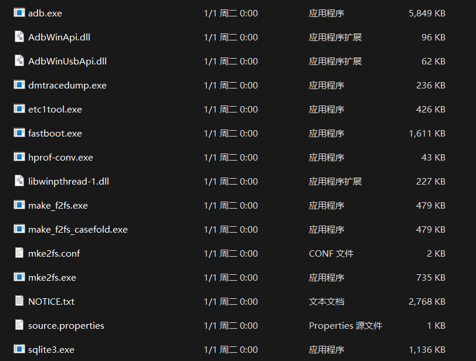
- 【可选步骤】将上述文件夹的路径加入到系统环境变量以使
adb、fastboot等程序能够在任意位置调用(如果不进行此处步骤，则下述步骤中的cmd和powershell 7请在上述 Android SDK Platform-Tools 解压后的文件夹目录中运行，并替换adb和fastboot指令为.\adb.exe和.\fastboot.exe执行)
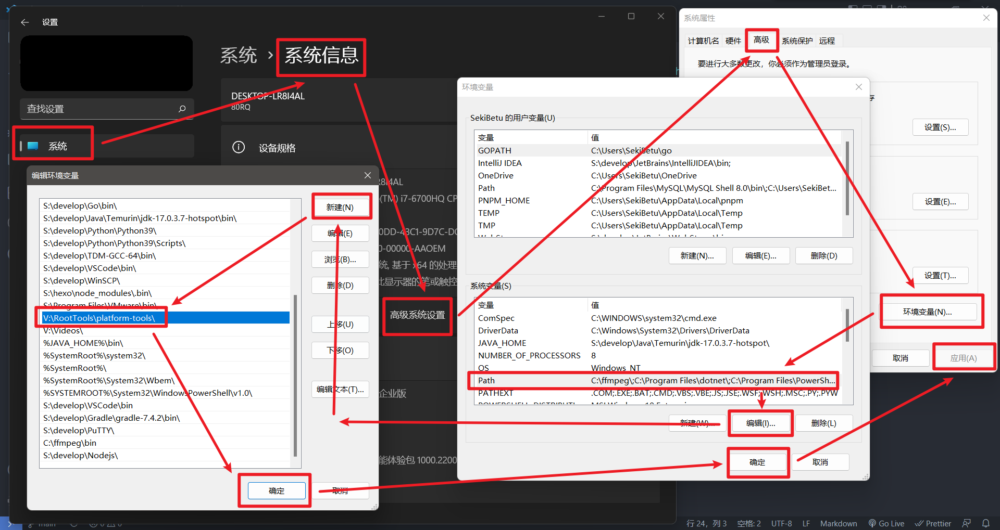
-
通过手机品牌官网下载或者以抓包的方式获取手机的系统安装包并解压获得
boot.img文件 -
在手机上安装 Magisk
-
将上述步骤获取到的
boot.img文件传输到手机中，并用 Magisk 对其进行修补
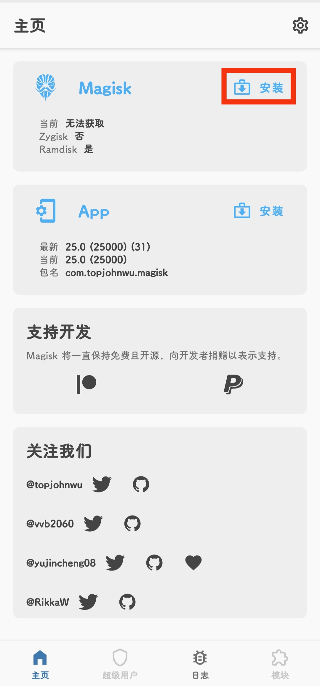
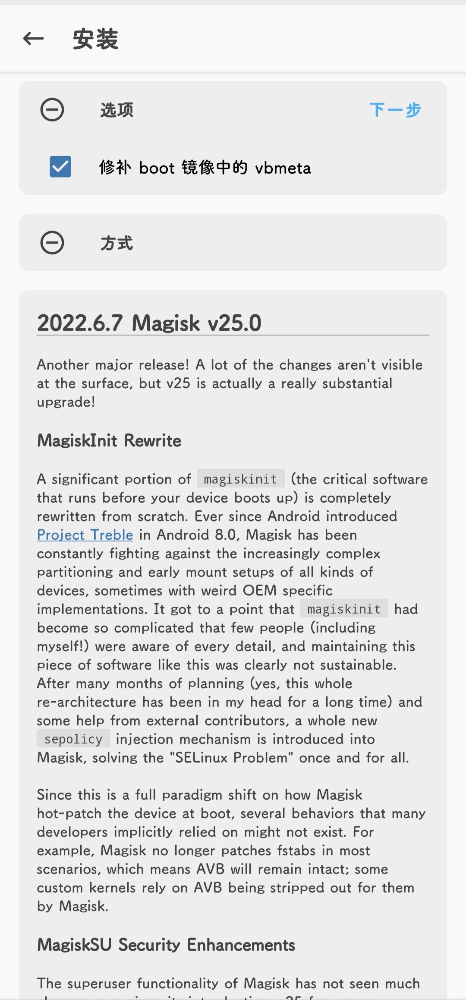
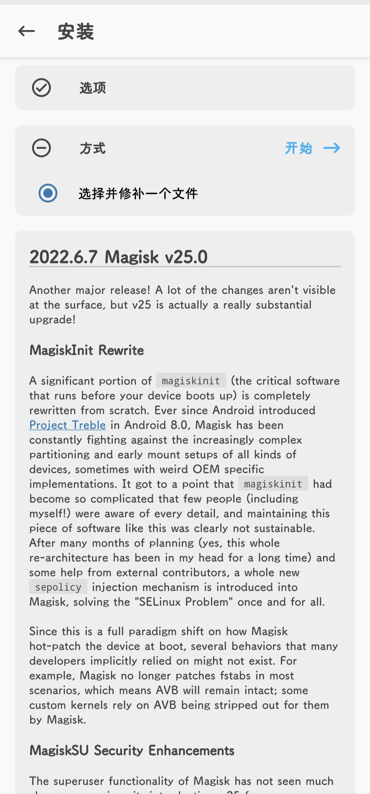
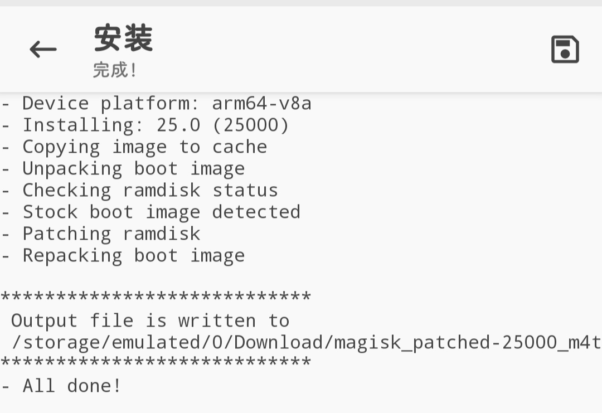
-
将修补后的
magisk_patched-25000_XXXXX.img文件传输回电脑 -
将手机通过 USB 连上电脑并启用手机的 USB 调试模式，然后设置为文件传输模式(各品牌手机不同，小米手机可以通过
我的设备——全部参数—— 多次点击MIUI版本开启开发者模式，在更多设置——开发者选项中启用USB调试选项) -
【可选步骤，适用于 USB 连接有问题的人】下载 Google USB 驱动压缩包并解压到一个文件夹后安装

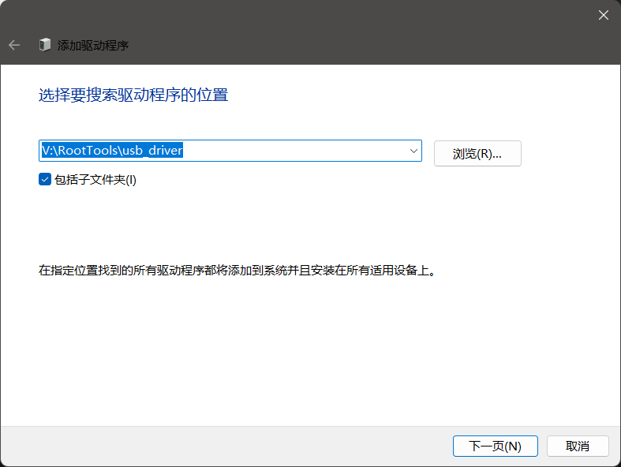
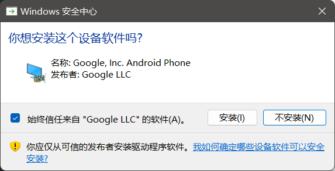
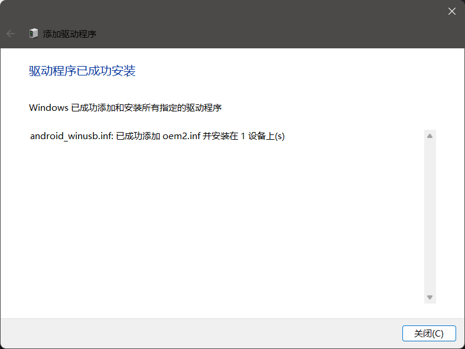
-
在电脑上打开
cmd或者powershell 7，输入adb devices回车执行查看是否能检测到手机，如果没有检测到则返回上一步安装 Google USB 驱动 -
继续输入
adb reboot bootloader回车执行使手机进入 fastboot 模式(也可以在手机关机状态下，同时按住电源和音量+键几秒后进入)
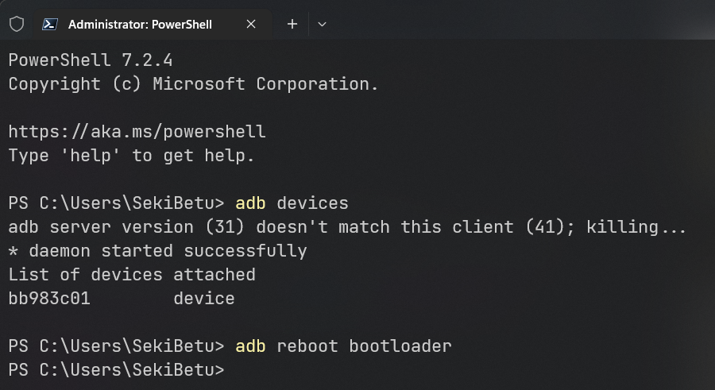
-
继续输入
fastboot flash boot 路径\magisk_patched-25000_XXXXX.img回车执行刷入通过 Magisk 修补后的上述文件 -
继续输入
fastboot reboot或者长按电源键关机后重启手机，至此，Magisk 的安装就完成了
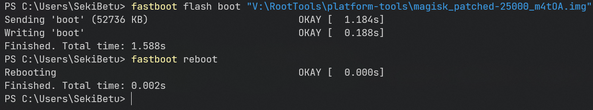
关于系统升级